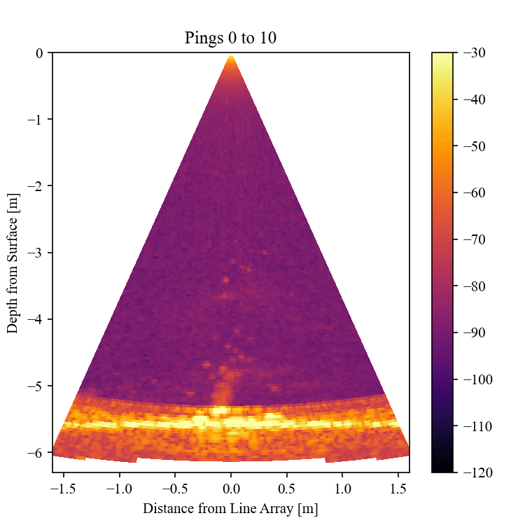
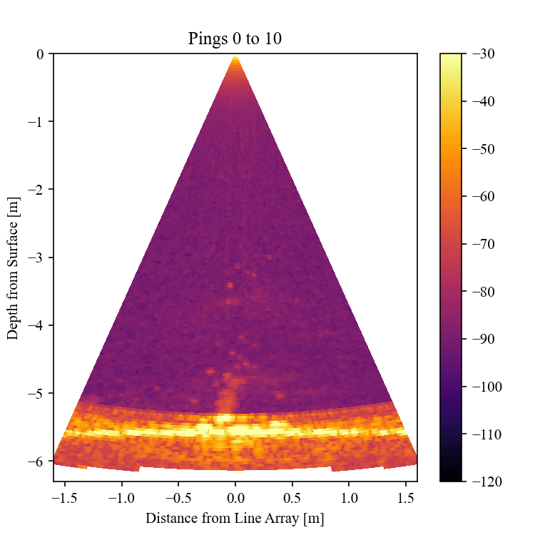

Research
Current Lab Group
I am currently an undergraduate researcher in Dr. Dan Reichart's lab working on gamma ray bursts (GRBs),
the Jovian magnetosphere, Astromancer, and Skynet 2!
Our current work is focused on modeling stellar winds with respect to two parameters -- wind velocity
and mass loss. We can learn what stars lead to certain prescriptions of stellar winds by constraining
these two parameters. Using a well defined physical GRB model and afterglow observations, we can learn
what stellar winds are required to create the observed afterglow. This method offers us a possible
window into the composition and metallicity of early universe stars.
I am also very interested interested in what can be learned from the decimetric observations of
the Jovian magnetosphere from Earth observation. High cadence observations in 1.3 to 8 GHz has not been
conducted on the order of multiple recordings per day. I am curious as to what these high cadence
observations may reveal about solar flare forcing or plasma transport instabilities.
Skynet 2 is robotic telescope network that aims to provide access to optical and radio telescopes to
students, professors, amateurs, and researchers. Skynet currently boasts 19 optical telescopes and 1 radio
telescope with 3 more radio telescopes joining in the latter half of 2025.
.png)
I also created a tool on an educational astronomy suite named Astromancer. My tool was responsible for
processing radio images and then locating radio sources within these radio images. The images are fitted
to a Flamsteed projection so that every area has equal flux. Radio maps were then taken to be stitched
together with manual WCS corrections completed within the tool. All sources were then labeled in the so-called
mega map across the galactic plane in radio wavelengths.
RIOS REU
In summer 2024, I participated in the Research Internships for Ocean Sciences (RIOS) Research Experience
for undergraduates (REU) at Rutgers New Brunswick. I was mentored by professor Dr. Karen Bemis on
analyzing and detecting hydrothermal plumes using a tank located at the University of New Hampshire (UNH).
My work was focused on creating 2D and 3D data visualizations that would best qualitatively assess hydrothermal plumes.
This included: creating static 2D plots of slices of our data, animating across a range of slices, and making heat map averages
of the plumes.
 

The end result of the project led to a GitHub repo with a lightweight software application for students to
familiarize themselves with hydrothermal plume data and for researchers to quickly assess plumes while
on research cruises.
ERIRA
I was a participant in the Educational Research in Radio Astronomy (ERIRA) program in 2023. This program gives students
the opportunity to learn about radio astronomy in an intensive week long program. During the program I particpated in
projects including:
• Astrophotography
• Mapping the Milky Way
• Sensing sunspots
• Recording Cas A